Papers,
Patents,
Papers
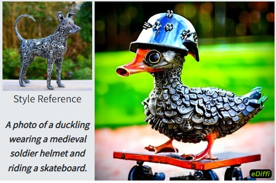


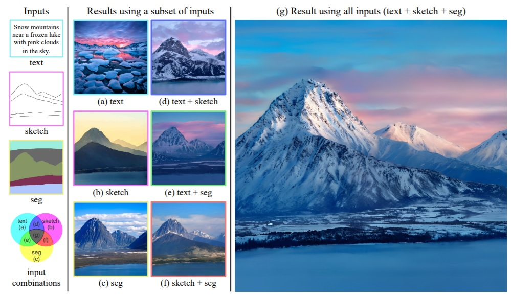
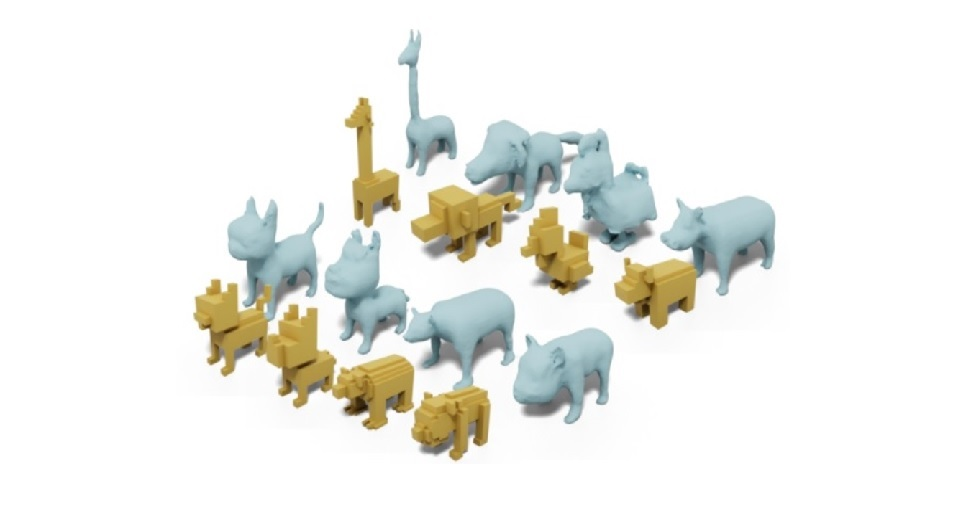


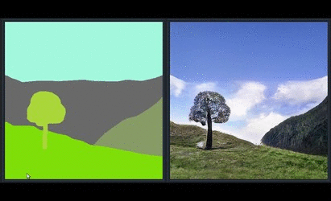
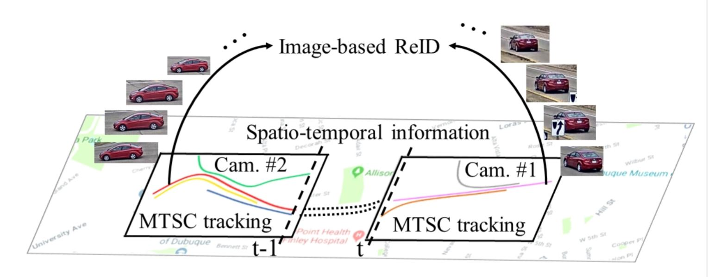


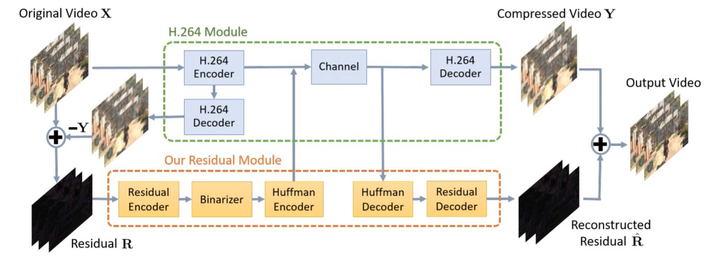

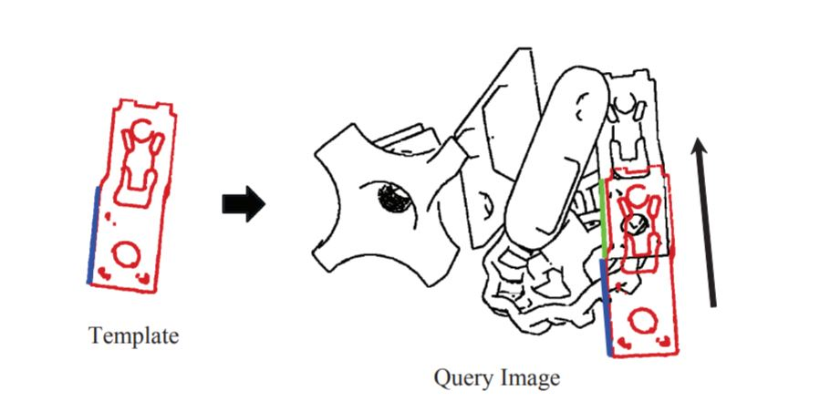

Awarded Patents
My
NVIDIA patents.
-
US 11,256,961: Training a neural network to predict superpixels using
segmentation-aware affinity loss
-
US 11,082,720: Using residual video data resulting from a compression of
original video data to improve a decompression of the original video data
-
US 11,017,556: Iterative spatio-temporal action detection in video
-
US 10,984,286: Domain stylization using a neural network model
-
US 10,922,792: Guided hallucination for missing image content using a neural
network
-
US 10,872,399: Photorealistic image stylization using a neural network model
-
US 10,789,678: Superpixel sampling networks
-
US 10,748,036: Training a neural network to predict superpixels using
segmentation-aware affinity loss
-
US 10,595,039: System and method for content and motion controlled action
video generation
-
US 10,593,020: Unsupervised learning approach for video deblurring
-
US 10,424,069: System and method for optical flow estimation
My
MERL patents.
-
US 9,989,964: System and Method for Controlling Vehicle Using Neural Network
-
US 9,971,958: Method and System for Generating Multimodal Digital Images
-
US 9,811,756: Method for Labeling Images of Street Scenes
-
US 9,805,294: Method for Denoising Time-of-Flight Range Images
-
US 9,704,257: System and method for semantic segmentation using Gaussian
random field network
-
US 9,633,274: Method and system for denoising images using deep Gaussian
conditional random field network
-
US 9,558,268: Method for semantically labeling an image of a scene using
recursive context propagation
-
US 9,280,827: Method for determining object poses using Weighted Features
-
US 9,195,904: Method for detecting objects in stereo images
-
US 8,983,177: Method for increasing resolutions of depth images
-
US 8,908,913: Voting-based pose estimation for 3D sensors
-
US 8,428,363: Method for segmenting images using superpixels and entropy
rate clustering
Papers
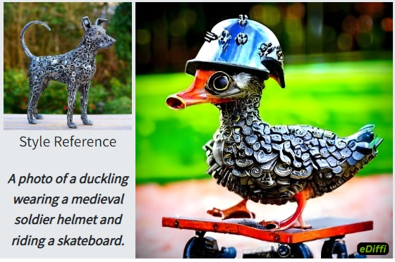
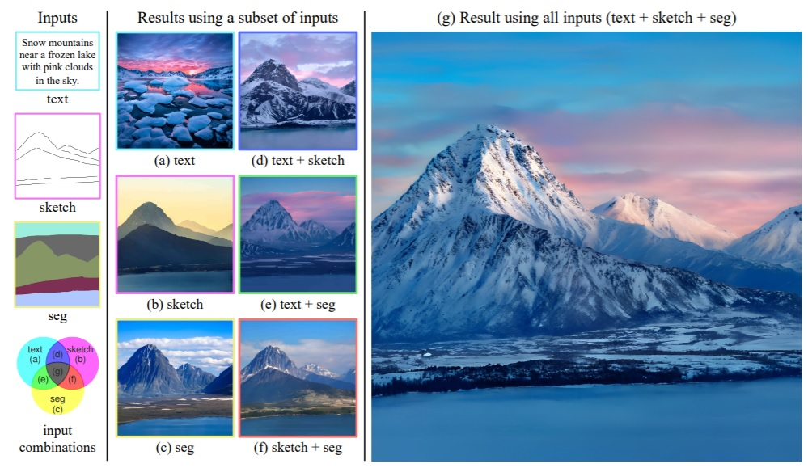
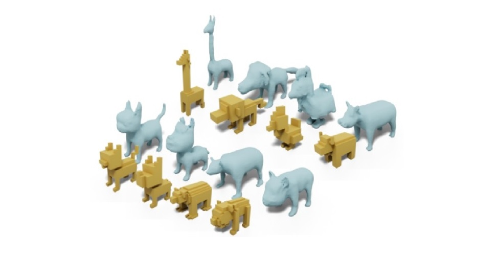
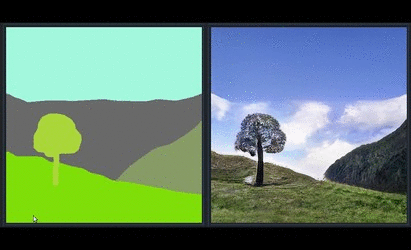
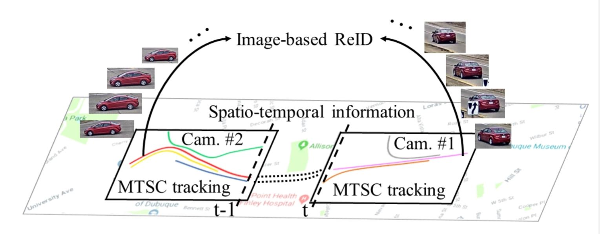
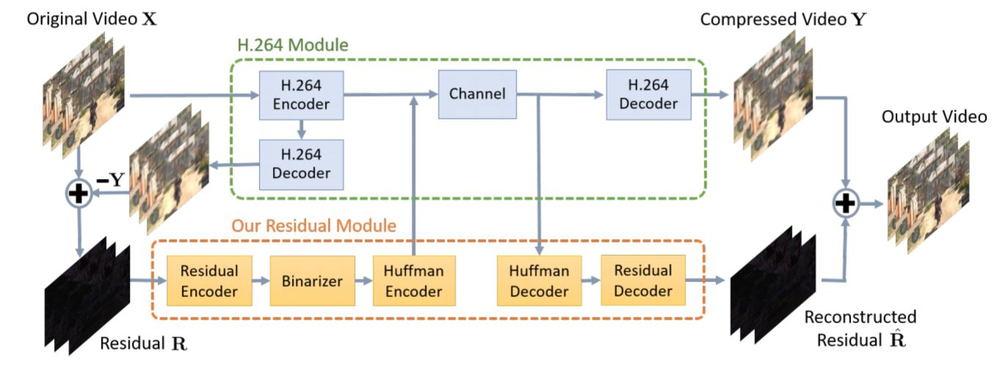
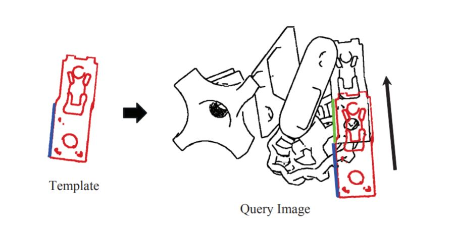
| 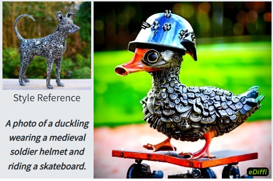 | eDiffi: Text-to-Image Diffusion Models with an Ensemble of Expert Denoisers Yogesh Balaji, Seungjun Nah, Xun Huang, Arash Vahdat, Jiaming Song, Karsten Kreis, Miika Aittala, Timo Aila, Samuli Laine, Bryan Catanzaro, Tero Karras, Ming-Yu Liu arxiv 2211.01324 [Project] [Video] |
| Implicit Warping for Animation with Image Sets Arun Mallya, Ting-Chun Wang, Ming-Yu Liu NeurIPS 2022 [Project] |
| Implicit Neural Representations with Levels-of-Experts Zekun Hao, Arun Mallya, Serge Belongie, Ming-Yu Liu NeurIPS 2022 |
|
|
Generating Long Videos of Dynamic Scenes Tim Brooks, Janne Hellsten, Miika Aittala, Ting-Chun Wang, Timo Aila, Jaakko Lehtinen, Ming-Yu Liu, Alexei A. Efros, Tero Karras NeurIPS 2022 [Code] |
|
Lumos: Learning to Relight Portrait Images via a Virtual Light Stage and Synthetic-to-Real Adaptation Yu-Ying Yeh, Koki Nagano, Sameh Khamis, Jan Kautz, Ming-Yu Liu, Ting-Chun Wang SIGGRAPH ASIA 2022 [Project] [Demo] [Video] |
| 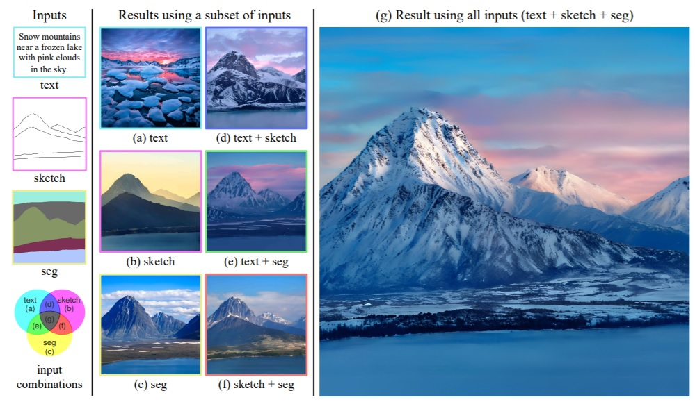 | Multimodal Conditional Image Synthesis with Product-of-Experts GANs Xun Huang, Arun Mallya, Ting-Chun Wang, Ming-Yu Liu ECCV 2022 [Project] |
| LNS-Madam: Low-Precision Training in Logarithmic Number System using Multiplicative Weight Update Jiawei Zhao, Steve Dai, Rangharajan Venkatesan, Ming-Yu Liu, Brucek Khailany, Bill Dally, Anima Anandkumar Transactions on Computers 2022 |
| 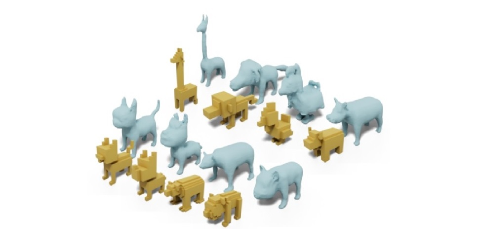 | Deep Marching Tetrahedra: a Hybrid Representation for High-Resolution 3D Shape Synthesis Tianchang Shen, Jun Gao, Kangxue Yin, Ming-Yu Liu, Sanja Fidler NeurIPS 2021 |
| I am AI: AI-driven Digital Avatar Made Easy Ming-Yu Liu, Koki Nagano, Yeongho Seol, Rafael Valle, Jaewoo Seo, Ting-Chun Wang, Arun Mallya, Sameh Khamis, Wei Ping, Rohan Badlani, Kevin J. Shih, Bryan Catanzaro, Simon Yuen, Jan Kautz SIGGRAPH RTL 2021 (Best-in-Show) |
| GANcraft: Unsupervised 3D Neural Rendering of Minecraft Worlds Zekun Hao, Arun Mallya, Serge Belongie, Ming-Yu Liu ICCV 2021 (Oral) [Project] [Video] |
|
One-Shot Free-View Neural Talking-Head Synthesis for Video Conferencing Ting-Chun Wang, Arun Mallya, Ming-Yu Liu CVPR 2021 (Oral) [Project] [Demo] [Video] |
| Generative Adversarial Networks for Image and Video Synthesis: Algorithms and Applications Ming-Yu Liu, Xun Huang, Jiahui Yu, Ting-Chun Wang, Arun Mallya Proceedings of the IEEE, 2021 |
| Learning compositional functions via multiplicative weight updates Jeremy Bernstein, Jiawei Zhao, Markus Meister, Ming-Yu Liu, Anima Anandkumar, Yisong Yue NeurIPS 2020 [Code] |
| On the distance between two neural networks and the stability of learning Jeremy Bernstein, Arash Vahdat, Yisong Yue, Ming-Yu Liu NeurIPS 2020 [Blog] [Code] |
|
COCO-FUNIT: Few-Shot Unsupervised Image Translation with a Content Conditioned Style Encoder Kuniaki Saito, Kate Saenko, Ming-Yu Liu ECCV 2020 (Spotlight) [Project] [Code] [Video] |
|
World-Consistent Video-to-Video Synthesis Arun Mallya, Ting-Chun Wang, Karan Sapra, Ming-Yu Liu ECCV 2020 [Project] [Code] [Video] |
| UFO2: A Unified Framework Towards Omni-supervised Object Detection Zhongzheng Ren, Zhiding Yu, Xiaodong Yang, Ming-Yu Liu, Alex Schwing, Jan Kautz ECCV 2020 [Project] [Code] [Video] |
| UNAS: Differentiable Architecture Search Meets Reinforcement Learning Arash Vahdat, Arun Mallya, Ming-Yu Liu, Jan Kautz CVPR 2020 [Code] |
| Instance-aware, Context-focused, and Memory-efficient Weakly-Supervised Object Detection Zhongzheng Ren, Zhiding Yu, Xiaodong Yang, Ming-Yu Liu, Yong Jae Lee, Alexander Schwing, Jan Kautz CVPR 2020 [Code] |
| Learning to Generate Multiple Style Transfer Outputs for an Input Sentence Kevin Lin, Ming-Yu Liu, Ming-Ting Sun, Jan Kautz ACL 2020 (Workshop) |
| Style Example-Guided Text Generation using Generative Adversarial Transformers Kuo-Hao Zeng, Mohammad Shoeybi, Ming-Yu Liu arXiv:2003.00674 |
| Domain Stylization: A Fast Covariance Matching Framework towards Domain Adaptation Aysegul Dundar, Ming-Yu Liu, Zhiding Yu, Ting-Chun Wang, John Zedlewski, Jan Kautz TPAMI 2020 |
| SymGAN: Orientation Estimation without Annotation for Symmetric Objects Phil Ammirato, Jonathan Tremblay, Ming-Yu Liu, Alexander Berg, Dieter Fox WACV 2020 |
| Few-Shot Video-to-Video Synthesis Ting-Chun Wang, Ming-Yu Liu, Andrew Tao, Guilin Liu, Jan Kautz, Bryan Catanzaro NeurIPS 2019 [Project] [Code] [Video] |
| Dancing to Music Hsin-Ying Lee, Xiaodong Yang, Ming-Yu Liu, Ting-Chun Wang, Yu-Ding Lu, Ming-Hsuan Yang, Jan Kautz NeurIPS 2019 [Code] |
|
Few-Shot Unsupervised Image-to-Image Translation Ming-Yu Liu, Xun Huang, Arun Mallya, Tero Karras, Timo Aila, Jaakko Lehtinen, Jan Kautz ICCV 2019 [Project] [Demo] [Code] |
|
PointFlow: 3D Point Cloud Generation with Continuous Normalizing Flows Guandao Yang, Xun Huang, Zekun Hao, Ming-Yu Liu, Serge Belongie, Bharath Hariharan ICCV 2019 (Oral) [Project] [Code] |
| Neural Turtle Graphics for Modeling City Road Layouts Hang Chu, Daiqing Li, David Acuna, Amlan Kar, Maria Shugrina, Xinkai Wei, Ming-Yu Liu, Antonio Torralba, Sanja Fidler ICCV 2019 (Oral) [Code] |
| Meta-Sim: Learning to Generate Synthetic Datasets Amlan Kar, Aayush Prakash, Ming-Yu Liu, Eric Cameracci, Justin Yuan, Matt Rusiniak, David Acuna, Antonio Torralba, Sanja Fidler ICCV 2019 (Oral) [Code] |
| Boosting segmentation with weak supervision from image-to-image translation Eugene Vorontsov, Pavlo Molchanov, Wonmin Byeon, Shalini De Mello, Varun Jampani, Ming-Yu Liu, Samuel Kadoury, Jan Kautz arxiv:1904.01636 |
| GauGAN: Semantic Image Synthesis With Spatially Adaptive Normalization Taesung Park, Chris Hebert, Ting-Chun Wang, Jun-Yan Zhu, Gavriil Klimov, Ming-Yu Liu SIGGRAPH Real-Time-Live 2019 (Best-in-Show, Audience Choice) |
| 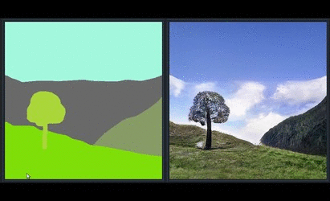 | Semantic Image Synthesis with Spatially-Adaptive Normalization Taesung Park, Ming-Yu Liu, Ting-Chun Wang, Jun-Yan Zhu CVPR 2019 (Oral, Best Paper Finalist) [Project] [Demo] [Code] [Video] |
| 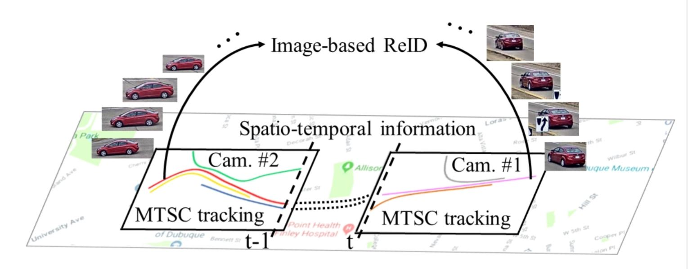 | CityFlow: A City-Scale Benchmark for Multi-Target Multi-Camera Vehicle Tracking and Re-Identification Zheng Tang, Milind Naphade, Ming-Yu Liu, Xiaodong Yang, Stan Birchfield, Shuo Wang, Ratnesh Kumar, David Anastasiu, Jenq-Neng Hwang CVPR 2019 (Oral) |
| STEP: Spatio-TempOral, Progressive Learning for Video Action Detection Xitong Yang, Xiaodong Yang, Ming-Yu Liu, Fanyi Xiao, Larry Davis, Jan Kautz CVPR 2019 (Oral) [Code] |
|
Models Matter, So Does Training: An Empirical Study of CNNs for Optical Flow Estimation Deqing Sun, Xiaodong Yang, Ming-Yu Liu, Jan Kautz TPAMI 2019 |
| Unsupervised Stylish Image Description Generation via Domain Layer Norm Cheng-Kuan Chen, Zhu-Feng Pan, Ming-Yu Liu, Min Sun AAAI 2019 |
|
Video-to-Video Synthesis Ting-Chun Wang, Ming-Yu Liu, Jun-Yan Zhu, Guilin Liu, Andrew Tao, Jan Kautz, Bryan Catanzaro NeurIPS 2018 [Project] [Code] [Video] |
| Context-aware Synthesis and Placement of Object Instances Donghoon Lee, Sifei Liu, Jinwei Gu, Ming-Yu Liu, Ming-Hsuan Yang, Jan Kautz NeurIPS 2018 [Code] |
| Localization-Aware Active Learning for Object Detection Chieh-Chi Kao, Teng-Yok Lee, Pradeep Sen, Ming-Yu Liu ACCV 2019 |
| Domain Stylization: A Strong, Simple Baseline for Synthetic to Real Image Domain Adaptation Aysegul Dundar, Ming-Yu Liu, Ting-Chun Wang, John Zedlewski, Jan Kautz arXiv:1807.09384 |
|
Multimodal Unsupervised Image-to-Image Translation Xun Huang, Ming-Yu Liu, Serge Belongie, Jan Kautz ECCV 2018 [Code] [Video] |
|
|
A Closed-form Solution to Photorealistic Image Stylization Yijun Li, Ming-Yu Liu, Xueting Li, Ming-Hsuan Yang, Jan Kautz ECCV 2018 [Code] [Video] |
| Superpixel Sampling Networks Varun Jampani, Deqing Sun, Ming-Yu Liu, Ming-Hsuan Yang, Jan Kautz ECCV 2018 [Code] |
| Reblur2Deblur: Deblurring Videos via Self-Supervised Learning Huaijin Chen, Jinwei Gu, Orazio Gallo, Ming-Yu Liu, Ashok Veeraraghavan, Jan Kautz ICCP 2018 |
| PWC-Net: CNNs for Optical Flow Using Pyramid, Warping, and Cost Volume Deqing Sun, Xiaodong Yang, Ming-Yu Liu, Jan Kautz CVPR 2018 (Oral) [Code] |
| Learning Superpixels with Segmentation-Aware Affinity Loss Wei-Chih Tu, Ming-Yu Liu, Varun Jampani, Deqing Sun, Shao-Yi Chien, Ming-Hsuan Yang, Jan Kautz CVPR 2018 [Code] |
|
MoCoGAN: Decomposing Motion and Content for Video Generation Sergey Tulyakov, Ming-Yu Liu, Xiaodong Yang, Jan Kautz CVPR 2018 [Code] |
| The 2018 NVIDIA AI City Challenge Milind Naphade, Ming-Ching Chang, Anuj Sharma, David C. Anastasiu, Vamsi Jagarlamudi, Pranamesh Chakraborty, Tingting Huang, Shuo Wang, Ming-Yu Liu, Rama Chellappa, Jenq-Neng Hwang, and Siwei Lyu CVPR 2018 (Workshop) |
| 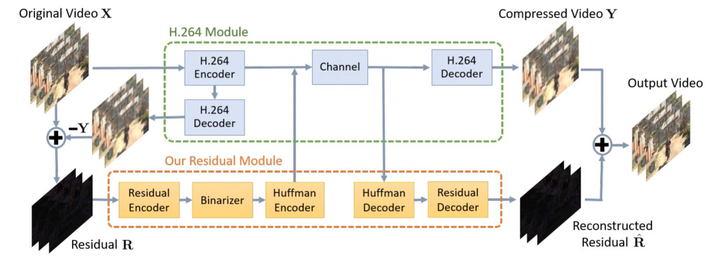 | Learning Binary Residual Representations for Domain-specific Video Streaming Yi-Hsuan Tsai, Ming-Yu Liu, Deqing Sun, Ming-Hsuan Yang, Jan Kautz AAAI 2018 |
|
Unsupervised Image-to-Image Translation Networks Ming-Yu Liu, Thomas Breuel, Jan Kautz NeurIPS 2017 [Code] |
| Detecting Adversarial Attacks on Neural Network Policies with Visual Foresight Yen-Chen Lin, Ming-Yu Liu, Min Sun, Jia-Bin Huang NeurIPS 2017 (Workshop) [Code] |
| Tactics of Adversarial Attack on Deep Reinforcement Learning Agents Yen-Chen Lin, Zhang-Wei Hong, Yuan-Hong Liao, Meng-Li Shih, Ming-Yu Liu, Min Sun IJCAI 2017 [Project] |
| Deep 360 Pilot: Learning a Deep Agent for Piloting through 360 Sports Videos Hou-Ning Hu*, Yen-Chen Lin*, Ming-Yu Liu, Hsien-Tzu Cheng, Stanley Chang, Min Sun CVPR 2017 (Oral) |
| CASENet: Deep Category-Aware Semantic Edge Detection Zhiding Yu, Chen Feng, Ming-Yu Liu, Srikumar Ramalingam CVPR 2017 [Code] |
| Deep Active Learning for Civil Infrastructure Defect Detection and Classification Chen Feng, Ming-Yu Liu, Chieh-Chi Kao, Teng-Yok Lee IWCCE 2017 |
| Attentional Network for Visual Object Detection Kota Hara, Ming-Yu Liu, Oncel Tuzel, Amir-massoud Farahmand arXiv:1702.01478 |
| Coupled Generative Adversarial Networks Ming-Yu Liu, Oncel Tuzel NeurIPS 2016 [Code] |
| R-CNN for Small Object Detection Chenyi Chen, Ming-Yu Liu, Oncel Tuzel, Jianxiong Xiao ACCV 2016 |
| Gaussian Conditional Random Field Network for Semantic Segmentation Raviteja Vemulapalli, Oncel Tuzel, Ming-Yu Liu, Rama Chellappa CVPR 2016 (Spotlight) |
| Deep Gaussian Conditional Random Field Network: A Model-based Deep Network for Discriminative Denoising Raviteja Vemulapalli, Oncel Tuzel, Ming-Yu Liu CVPR 2016 |
| Learning to Remove Multipath Distortions in Time-of-Flight Range Images for a Robotic Arm Setup ICRA 2016 [Dataset] |
| Unsupervised Network Pretraining via Encoding Human Design Ming-Yu Liu, Arun Mallya, Oncel Tuzel, Xi Chen WACV 2016 |
| Layered Interpretation of Street View Images Ming-Yu Liu, Shuoxin Lin, Srikumar Ramalingam, Oncel Tuzel RSS 2015 (Best Paper Finalist) |
| Recursive Context Propagation Network for Semantic Scene Labeling Abhishek Sharma, Oncel Tuzel, Ming-Yu Liu NeurIPS 2014 |
| Learning to Rankd 3D Features Oncel Tuzel, Ming-Yu Liu, Yuichi Taguchi, Arvind Raghunathan ECCV 2014 |
| Joint Geodesic Upsampling of Depth Images Ming-Yu Liu, Oncel Tuzel, Yuichi Taguchi CVPR 2013 [Results] [Code] |
| Entropy Rate Clustering: Cluster Analysis via Maximizing a Submodular Function Subject to a Matroid Constraint Ming-Yu Liu, Oncel Tuzel, Srikumar Ramalingam, Rama Chellappa TPAMI 2013 |
| Model-based Vehicle Pose Estimation and Tracking in Videos Using Random Forests Michael Hodlmoser, Branislav Micusik, Marc Pollefeys, Ming-Yu Liu, Martin Kampel 3DV 2013 |
| 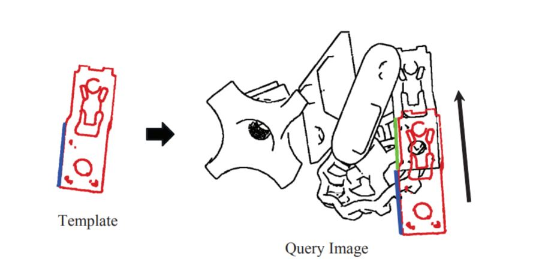 | Fast Object Localization and Pose Estimation in Heavy Clutter for Robotic Bin Picking Ming-Yu Liu, Oncel Tuzel, Ashok Veeraraghavan, Yuichi Taguchi, Tim K. Marks, Rama Chellappa IJRR 2012 [Code] |
| A Grassmann Manifold-based Domain Adaptation Approach Jingjing Zheng, Ming-Yu Liu, Rama Chellappa, P Jonathan Phillips ICPR 2012 (Oral) |
| Classification and Pose Estimation of Vehicles in Videos by 3D Modeling within Discrete-Continuous Optimization Michael Hödlmoser, Branislav Micusik, Ming-Yu Liu, Marc Pollefeys, Martin Kampel 3DV 2012 |
|
Entropy Rate Superpixel Segmentation Ming-Yu Liu, Oncel Tuzel, Srikumar Ramalingam, Rama Chellappa CVPR 2011 [Code] |
| Fast Directional Chamfer Matching Ming-Yu Liu, Oncel Tuzel, Srikumar Ramalingam, Rama Chellappa CVPR 2010 [Code] |
| Pose Estimation in Heavy Clutter Using a Multi-Flash Camera Ming-Yu Liu, Oncel Tuzel, Ashok Veeraraghavan, Rama Chellappa, Amit Agrawal, Haruhisa Okuda ICRA 2010 |
Awarded Patents
-
US 11,256,961: Training a neural network to predict superpixels using segmentation-aware affinity loss
-
US 11,082,720: Using residual video data resulting from a compression of original video data to improve a decompression of the original video data
-
US 11,017,556: Iterative spatio-temporal action detection in video
-
US 10,984,286: Domain stylization using a neural network model
-
US 10,922,792: Guided hallucination for missing image content using a neural network
-
US 10,872,399: Photorealistic image stylization using a neural network model
-
US 10,789,678: Superpixel sampling networks
-
US 10,748,036: Training a neural network to predict superpixels using segmentation-aware affinity loss
-
US 10,595,039: System and method for content and motion controlled action video generation
-
US 10,593,020: Unsupervised learning approach for video deblurring
-
US 10,424,069: System and method for optical flow estimation
-
US 9,989,964: System and Method for Controlling Vehicle Using Neural Network
-
US 9,971,958: Method and System for Generating Multimodal Digital Images
-
US 9,811,756: Method for Labeling Images of Street Scenes
-
US 9,805,294: Method for Denoising Time-of-Flight Range Images
-
US 9,704,257: System and method for semantic segmentation using Gaussian random field network
-
US 9,633,274: Method and system for denoising images using deep Gaussian conditional random field network
-
US 9,558,268: Method for semantically labeling an image of a scene using recursive context propagation
-
US 9,280,827: Method for determining object poses using Weighted Features
-
US 9,195,904: Method for detecting objects in stereo images
-
US 8,983,177: Method for increasing resolutions of depth images
-
US 8,908,913: Voting-based pose estimation for 3D sensors
-
US 8,428,363: Method for segmenting images using superpixels and entropy rate clustering